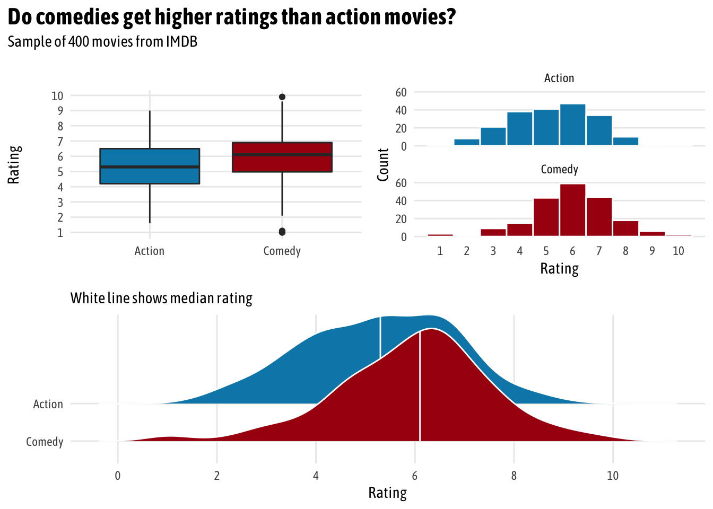
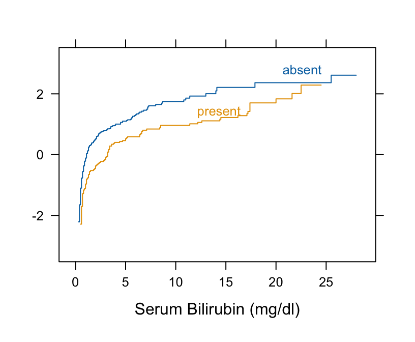
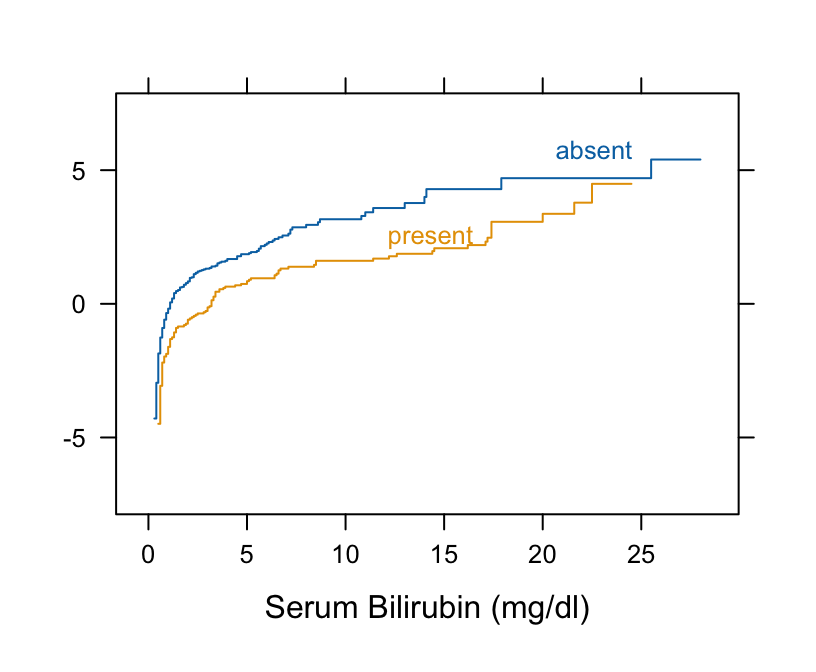
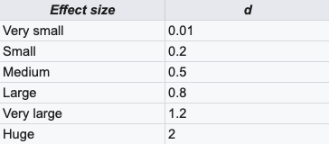

General
Misc
Also see Mathematics, Statistics >> Descriptive Statistics>> Understanding CI, SD, and SEM Bars
Notes from
Resources
Packages
- {rstatix}
- {dabestr} for visualization
To obtain nonparametric confidence limits for means and differences in means, the bootstrap percentile method may easily be used and it does not assume symmetry of the data distribution.
-
estimate <- esci::estimate_mdiff_two( data = mydata, outcome_variable = Prediction, grouping_variable = Exposure, conf_level = 0.95, assume_equal_variance = TRUE ) esci::plot_mdiff( estimate, effect_size = "mean" )- The left y-axis is the outcome value given each group variable level
- Shows each group level’s mean with error bars and a mini-density figure
- The right y-axis is the mean difference value
- The axis is centered on the mean of the 1 group level which shows that its the reference level
- The mean of the 20 group level is centered on the mean difference value
- The mean difference is shows with error bar and mini-density figure.
- effect = “median” is also available
- error_layout = c(“halfeye”, “eye”, “gradient”, “none”) are error bar options
- rope = c(-5, 5) - Decided prior to analysis, says you’ve determined an effect larger than 5 units is the ROPE (region of practical equivalence) (i.e. subjective determination of a substantial effect size)
- {ggplot} object so customizable
- The left y-axis is the outcome value given each group variable level
{kind=link}
{kind=link}
EDA
Misc
- In code examples, movies_clean is the data; rating is the numeric; and genre (action vs comedy) is the group variable
Charts
Box, Histogram, Density for two groups (
factor(genre)) (Heiss)
Code
pacman::p_load(ggplot2movies, ggplot2, ggridges, patchwork) # Make a custom theme # I'm using Asap Condensed; download from # https://fonts.google.com/specimen/Asap+Condensed theme_fancy <- function() { theme_minimal(base_family = "Asap Condensed") + theme(panel.grid.minor = element_blank()) } # boxplot eda_boxplot <- ggplot(movies_clean, aes(x = genre, y = rating, fill = genre)) + geom_boxplot() + scale_fill_manual(values = c("#0288b7", "#a90010"), guide = FALSE) + scale_y_continuous(breaks = seq(1, 10, 1)) + labs(x = NULL, y = "Rating") + theme_fancy() # histogram eda_histogram <- ggplot(movies_clean, aes(x = rating, fill = genre)) + geom_histogram(binwidth = 1, color = "white") + scale_fill_manual(values = c("#0288b7", "#a90010"), guide = FALSE) + scale_x_continuous(breaks = seq(1, 10, 1)) + labs(y = "Count", x = "Rating") + facet_wrap(~ genre, nrow = 2) + theme_fancy() + theme(panel.grid.major.x = element_blank()) # density ridges plot eda_ridges <- ggplot(movies_clean, aes(x = rating, y = fct_rev(genre), fill = genre)) + stat_density_ridges(quantile_lines = TRUE, quantiles = 2, scale = 3, color = "white") + scale_fill_manual(values = c("#0288b7", "#a90010"), guide = FALSE) + scale_x_continuous(breaks = seq(0, 10, 2)) + labs(x = "Rating", y = NULL, subtitle = "White line shows median rating") + theme_fancy() # patchwork combine (eda_boxplot | eda_histogram) / eda_ridges + plot_annotation(title = "Do comedies get higher ratings than action movies?", subtitle = "Sample of 400 movies from IMDB", theme = theme(text = element_text(family = "Asap Condensed"), plot.title = element_text(face = "bold", size = rel(1.5))))Check t-test assumptions via ECDF
Requires parallelism and linearity when the ECDFs are normal-inverse transformed
- Linearity implies normal distribution (like q-q plot)
- Parallelism implies equal variances
Small samples ECDFs can be too noisy to see patterns clearly
Procedure
- Compute the empirical cumulative distribution function (ECDF) for the response variable, stratified by group
- Take the inverse transformation of normal for each ECDF
- Check for parallelism and linearity
Example: Harrell BFBR Ch. 7.7
Code
Hmisc::getHdata(pbc) pbc[, c("bili", "spiders")] |> dplyr::glimpse() #> Rows: 418 #> Columns: 2 #> $ bili <labelled> 14.5, 1.1, 1.4, 1.8, 3.4, 0.8, 1.0, 0.3, 3.2, 12.6, 1.4, 3.6, 0.7, 0.8, 0.8, 0.7, 2.7, 11.4, 0.7, 5.1, 0.6, 3.4, 17.4… #> $ spiders <fct> present, present, absent, present, present, absent, absent, absent, present, present, present, present, absent, absent, ab… # Take normal-inverse of ECDF Hmisc::Ecdf(~ bili, group = spiders, data = pbc, fun = qnorm)- Curves are primarily parallel (variances are equal)
- Therefore, Wilcoxon Rank Sum and Signed Rank or Kruskal-Wallis should work.
- But they are not straight lines as required by t-test normality assumption
- Curves are primarily parallel (variances are equal)
Check Wilcoxon assumptions via ECDF
Assumes Proportional Odds
Procedure
- Compute the empirical cumulative distribution function (ECDF) for the response variable, stratified by group
- Take the logit transformation of each ECDF
- Check for parallelism
Example: Harrell BFBR Ch. 7.7
Code
Hmisc::getHdata(pbc) pbc[, c("bili", "spiders")] |> dplyr::glimpse() #> Rows: 418 #> Columns: 2 #> $ bili <labelled> 14.5, 1.1, 1.4, 1.8, 3.4, 0.8, 1.0, 0.3, 3.2, 12.6, 1.4, 3.6, 0.7, 0.8, 0.8, 0.7, 2.7, 11.4, 0.7, 5.1, 0.6, 3.4, 17.4… #> $ spiders <fct> present, present, absent, present, present, absent, absent, absent, present, present, present, present, absent, absent, ab… # Take logit of ECDF Hmisc::Ecdf(~ bili, group = spiders, data = pbc, fun = qlogis)- The curves are primarily parallel (even at the far left, despite the optical illusion)
- Nonlinearity that is present is irrelevant
{kind=link}
{kind=link}
{kind=link}
Test for Equal Variances
Misc
- “Glass and Hopkins (1996 p. 436) state that the Levene and B-F tests are”fatally flawed”; It isn’t clear how robust they are when there is significant differences in variances and unequal sample sizes. ”
Bartlett test: Check homogeneity of variances based on the mean
bartlett.test(rating ~ genre, data = movies_clean)Levene test: Check homogeneity of variances based on the median, so it’s more robust to outliers
car::leveneTest(rating ~ genre, data = movies_clean)Also {DescTools}
Other tests are better
Fligner-Killeen test: Check homogeneity of variances based on the median, so it’s more robust to outliers
fligner.test(rating ~ genre, data = movies_clean)Brown-Forsythe (B-F) Test (link)
- Attempts to correct for the skewness of the Levene Test transformation by using deviations from group medians.
- Less likely than the Levene test to incorrectly declare that the assumption of equal variances has been violated.
- Thought to perform as well as or better than other available tests for equal variances
onewaytests::bf.test(weight_loss ~ program, data = data)- p-value < 0.05 means the difference in variances is statistically significant
- Attempts to correct for the skewness of the Levene Test transformation by using deviations from group medians.
Frequentist Difference-in-Means
T-test
Test whether the difference between means is statistically different from 0
Default is for non-equal variances
t_test_eq <- t.test(rating ~ genre, data = movies_clean, var.equal = TRUE) t_test_eq_tidy <- tidy(t_test_eq) %>% # Calculate difference in means, since t.test() doesn't actually do that mutate(estimate_difference = estimate1 - estimate2) %>% # Rearrange columns select(starts_with("estimate"), everything())For unequal variances, Welch’s T-Test:
var.equal = FALSE- Recommended for large datasets
Hotelling’s T2
- Multivariate generalization of Welch’s T-Test
- {DescTools::HotellingsT2Test}
- {ICSNP}
Non-Parametric Difference-in-Means Tests
- Wilcoxon Rank Sum and Signed Rank:
wilcox.test- 1 or 2 variables/“samples”
- 2 variable aka “Wilcoxon-Mann-Whitney”
coin::wilcox_test- For exact, asymptotic and Monte Carlo conditional p-values, including in the presence of ties
- Kruskal-Wallis:
kruskal.test(rating ~ genre, data = movies_clean)- More than 2 variables/“samples”
Kolomogorov-Smirnov
ks.test- Calculates the difference in cdf of each sample
- 2 variables/“samples”
- For mixed or discrete, see {KSgeneral}
Bootstrap
Steps
- Calculate a sample statistic, or δ: This is the main measure you care about: the difference in means, the average, the median, the proportion, the difference in proportions, the chi-squared value, etc.
- Use simulation to invent a world where δ is null: Simulate what the world would look like if there was no difference between two groups, or if there was no difference in proportions, or where the average value is a specific number.
- Look at δ in the null world: Put the sample statistic in the null world and see if it fits well.
- Calculate the probability that δ could exist in null world: This is the p-value, or the probability that you’d see a δ at least that high in a world where there’s no difference.
- Decide if δ is statistically significant: Choose some evidentiary standard or threshold (like 0.05) for deciding if there’s sufficient proof for rejecting the null world.
Standard Method
library(infer) # Calculate the difference in means diff_means <- movies_clean %>% specify(rating ~ genre) %>% # Order here means we subtract comedy from action (Action - Comedy) calculate("diff in means", order = c("Action", "Comedy")) boot_means <- movies_clean %>% specify(rating ~ genre) %>% generate(reps = 1000, type = "bootstrap") %>% calculate("diff in means", order = c("Action", "Comedy")) boostrapped_confint <- boot_means %>% get_confidence_interval() boot_means %>% visualize() + shade_confidence_interval(boostrapped_confint, color = "#8bc5ed", fill = "#85d9d2") + geom_vline(xintercept = diff_means$stat, size = 1, color = "#77002c") + labs(title = "Bootstrapped distribution of differences in means", x = "Action − Comedy", y = "Count", subtitle = "Red line shows observed difference; shaded area shows 95% confidence interval") + theme_fancy()Downey’s Process: Generate a world where there’s no difference by shuffling all the action/comedy labels through permutation
# Step 1: δ = diff_means (see above) # Step 2: Invent a world where δ is null genre_diffs_null <- movies_clean %>% specify(rating ~ genre) %>% hypothesize(null = "independence") %>% generate(reps = 5000, type = "permute") %>% calculate("diff in means", order = c("Action", "Comedy")) # Step 3: Put actual observed δ in the null world and see if it fits genre_diffs_null %>% visualize() + geom_vline(xintercept = diff_means$stat, size = 1, color = "#77002c") + scale_y_continuous(labels = comma) + labs(x = "Simulated difference in average ratings (Action − Comedy)", y = "Count", title = "Simulation-based null distribution of differences in means", subtitle = "Red line shows observed difference") + theme_fancy()- If line is outside null distribution, then the difference value doesn’t fit in a world where the null hypothesis is the truth
Generate a p-value
# Step 4: Calculate probability that observed δ could exist in null world genre_diffs_null %>% get_p_value(obs_stat = diff_means, direction = "both") %>% mutate(p_value_clean = pvalue(p_value))
Bayesian Difference-in-Means
Misc
- Notes from
- Frequentist null hypothesis significance testing (NHST) determines the probability of the data given a null hypothesis (i.e. \(P(data|H)\), yielding results that are often unwieldy, phrased as the probability of rejecting the null if it is true (hence all that talk of “null worlds”). In contrast, Bayesian analysis determines the probability of a hypothesis given the data (i.e.P(H|data)), resulting in probabilities that are directly interpretable.
Regression (Equal Variances)
With {brms}
brms_eq <- brm( # bf() is an alias for brmsformula() and lets you specify model formulas bf(rating ~ genre), # Reverse the levels of genre so that comedy is the base case data = mutate(movies_clean, genre = fct_rev(genre)), prior = c(set_prior("normal(0, 5)", class = "Intercept"), set_prior("normal(0, 1)", class = "b")), chains = 4, iter = 2000, warmup = 1000, seed = 1234, file = "cache/brms_eq" ) # median of posterior and CIs brms_eq_tidy <- broom::tidyMCMC(brms_eq, conf.int = TRUE, conf.level = 0.95, estimate.method = "median", conf.method = "HPDinterval")- family = gaussian (default)
- b_intercept: mean comedy score while the
- b_genreAction: difference from mean comedy score (i.e. difference in means)
- sSays “We’re 95% confident that the true population-level difference in rating is between -0.968 and -0.374, with a median of -0.666.”
Regression (unequal variances)
With {brms}
brms_uneq <- brm( bf(rating ~ genre, sigma ~ genre), data = mutate(movies_clean, genre = fct_rev(genre)), prior = c(set_prior("normal(0, 5)", class = "Intercept"), set_prior("normal(0, 1)", class = "b"), # models the variance for each group (e.g. comedy and action) set_prior("cauchy(0, 1)", class = "b", dpar = "sigma")), chains = CHAINS, iter = ITER, warmup = WARMUP, seed = BAYES_SEED, file = "cache/brms_uneq" ) # median of posterior and CIs brms_uneq_tidy <- tidyMCMC(brms_uneq, conf.int = TRUE, conf.level = 0.95, estimate.method = "median", conf.method = "HPDinterval") %>% # sigma terms on log-scale so exponentiate them to get them back to original scale mutate_at(vars(estimate, std.error, conf.low, conf.high), funs(ifelse(str_detect(term, "sigma"), exp(.), .)))- Interpretation for intercept and main effect estimates same as before
- b_sigma_intercept and b_sigma_genreAction are the std.devs for those posteriors
Bayesian Estimation Supersedes the T-test (BEST)
Unequal Variances, student-t distribution
Same as before but with a coefficient for ν, the degrees of freedom, for the student-t distribution.
Models each group distribution (by removing intercept w/ 0 + formula notation), then calculates difference in means by hand
brms_uneq_robust_groups <- brm( bf(rating ~ 0 + genre, sigma ~ 0 + genre), family = student, data = mutate(movies_clean, genre = fct_rev(genre)), prior = c( # Set group mean prior set_prior("normal(6, 2)", class = "b", lb = 1, ub = 10), # Ser group variance priors. We keep the less informative cauchy(0, 1). set_prior("cauchy(0, 1)", class = "b", dpar = "sigma"), set_prior("exponential(1.0/29)", class = "nu")), chains = CHAINS, iter = ITER, warmup = WARMUP, seed = BAYES_SEED, file = "cache/brms_uneq_robust_groups" ) brms_uneq_robust_groups_tidy <- tidyMCMC(brms_uneq_robust_groups, conf.int = TRUE, conf.level = 0.95, estimate.method = "median", conf.method = "HPDinterval") %>% # Rescale sigmas mutate_at(vars(estimate, std.error, conf.low, conf.high), funs(ifelse(str_detect(term, "sigma"), exp(.), .)) brms_uneq_robust_groups_post <- posterior_samples(brms_uneq_robust_groups) %>% # We can exponentiate here! mutate_at(vars(contains("sigma")), funs(exp)) %>% # For whatever reason, we need to log nu? mutate(nu = log10(nu)) %>% mutate(diff_means = b_genreAction - b_genreComedy, diff_sigma = b_sigma_genreAction - b_sigma_genreComedy) %>% # Calculate effect sizes, just for fun mutate(cohen_d = diff_means / sqrt((b_sigma_genreAction + b_sigma_genreComedy)/2), cles = dnorm(diff_means / sqrt((b_sigma_genreAction + b_sigma_genreComedy)), 0, 1)) brms_uneq_robust_groups_tidy_fixed <- tidyMCMC(brms_uneq_robust_groups_post, conf.int = TRUE, conf.level = 0.95, estimate.method = "median", conf.method = "HPDinterval") ## # A tibble: 9 x 5 ## term estimate std.error conf.low conf.high ## <chr> <dbl> <dbl> <dbl> <dbl> ## 1 b_genreComedy 5.99 0.109 5.77 6.19 ## 2 b_genreAction 5.30 0.107 5.09 5.50 ## 3 b_sigma_genreComedy 1.47 0.0882 1.30 1.64 ## 4 b_sigma_genreAction 1.47 0.0826 1.31 1.62 ## 5 nu 1.48 0.287 0.963 2.04 ## 6 diff_means -0.690 0.151 -1.01 -0.415 ## 7 diff_sigma 0.00100 0.111 -0.212 0.217 ## 8 cohen_d -0.571 0.126 -0.818 -0.327 ## 9 cles 0.368 0.0132 0.341 0.391Cohen’s d: standardized difference in means (Also see Post-Hoc Analysis, Multilevel >> Cohen’s D)
Common language effect size (CLES): Probability that a rating sampled at random from one group will be greater than a rating sampled from the other group.
- 36.8% chance that we could randomly select an action rating from the comedy distribution
Dichotomous Data
Mean (probability-of-event) + CI Estimation
Large Population
\[ \hat p \pm z_{\alpha/2} \sqrt {\frac{\hat p(1-\hat p)}{n}} \]
binom::binom.asymp(x=x, n=n, conf.level=0.95) ## method x n mean lower upper ## 1 asymptotic 52 420 0.1238095 0.09231031 0.1553087Small/Finite Population
\[ \hat p \pm z_{\alpha/2} \sqrt {\frac{\hat p(1-\hat p)}{n} \cdot \frac{N-n}{N-1}} \]
- See
?binom::binom.confintfor many methods - “When the intracluster correlation coefficient is high and the prevalence, p, is less than 0.10 or greater than 0.90, the Agresti-Coull and Clopper-Pearson intervals perform best. In other settings, the Clopper-Pearson interval is unnecessarily wide. In general, the Logit, Wilson, Jeffreys, and Agresti-Coull intervals perform well, although the Logit interval may be intractable when the standard error is equal to zero.” (paper)
- See
1-Sample Proportion Test
Example: Do 50% of infants start walking by 12 months of age?
> table(walkby12) #> walkby12 #> 0 1 #> 14 36 prop.test(36,50,p=0.5,correct=FALSE) #> 1-sample proportions test without continuity correction #> data: 36 out of 50, null probability 0.5 #> X-squared = 9.68, df = 1, p-value = 0.001863 #> alternative hypothesis: true p is not equal to 0.5 #> 95 percent confidence interval: #> 0.5833488 0.8252583 #> sample estimates: #> p #> 0.72p-value < 0.05 therefore the null hypothesis of 50% of infants walking is rejected
correct = FALSEsays this is a large sample (See assumptions in difference of proportions >> Z-Test)CI for the population proportion estimate is given.
Bayesian
# Mean proportion estimated with prior that mean lies between 0.05 and 0.15 ##Function to determine beta parameters s.t. the 2.5% and 97.5% quantile match the specified values target <- function(theta, prior_interval, alpha=0.05) { sum( (qbeta(c(alpha/2, 1-alpha/2), theta[1], theta[2]) - prior_interval)^2) } ## Find the prior parameters prior_params <- optim(c(10,10),target, prior_interval=c(0.05, 0.15))$par ## [1] 12.04737 116.06022 # not really sure how this works. Guessing theta1,2 is c(10,10) but then there doesn't seem to be an unknown to optimize for. ## Compute credibile interval from a beta-binomial conjugate prior-posterior approach binom::binom.bayes(x=x, n=n, type="central", prior.shape1=prior_params[1], prior.shape2=prior_params[2]) ## method x n shape1 shape2 mean lower upper sig ## 1 bayes 52 420 64.04737 484.0602 0.1168518 0.09134069 0.1450096 0.05 ##Plot of the beta-posterior p <- binom::binom.bayes.densityplot(ci_bayes) ##Add plot of the beta-prior df <- data.frame(x=seq(0,1,length=1000)) %>% mutate(pdf=dbeta(x, prior_params[1], prior_params[2])) p + geom_line(data=df, aes(x=x, y=pdf), col="darkgray",lty=2) + coord_cartesian(xlim=c(0,0.25)) + scale_x_continuous(labels=scales::percent) # Estimated with a flat prior (essentially equivalent to the frequentist approach) binom::binom.bayes(x=x, n=n, type="central", prior.shape1=1, prior.shape2=1)) ## method x n shape1 shape2 mean lower upper sig ## 1 bayes 52 420 53 369 0.1255924 0.09574062 0.158803 0.05- From https://staff.math.su.se/hoehle/blog/2017/06/22/interpretcis.html
- Interpretation
- Technical: “95% equi-tailed credible interval resulting from a beta-binomial conjugate Bayesian approach obtained when using a prior beta with parameters such that the similar 95% equi-tailed prior credible interval has limits 0.05 and 0.15. Given these assumptions the interval 9.1%- 14.5% contains 95% of your subjective posterior density for the parameter.”
- Nontechnical: the true value is in that interval with 95% probability or just this 95% Bayesian confidence interval is 9.1%- 14.5%.
Difference in Proportions
Cochran-Mantel-Haenszel Test: This test is appropriate when you have data from multiple 2x2 tables (strata) and want to test the association between two categorical variables while controlling for the effects of a third variable (confounding variable).
- See Discrete Analysis Notebook
Do NOT use Fisher’s Exact Test.
- Several different p-values can be associated with a single table, making scientific inference inconsistent
- Despite the fact that Fisher’s test gives exact p-values, some authors have argued that it is conservative, i.e. that its actual rejection rate is below the nominal significance level. The issue has to do with Fisher’s test conditioning on the margin totals.
Likelihood ratios, posterior probabilities and mid-p-values - lead to more consistent inferences. Recommendations from this paper:
- A Bayesian interval for the log odds ratio with Jeffreys’ reference prior
- Conditional Likelihood Ratio Test
- {ProfileLikelihood}:
LR.pvalue(y1, y2, n1, n2, interval=0.01)
- {ProfileLikelihood}:
Z-Test
\[ \begin{align} &Z = \frac{(\hat p_1 - \hat p_2)}{\sqrt{\hat p (1 - \hat p) \left(\frac{1}{n_1}-\frac{1}{n_2}\right)}} \\ &\text{where} \;\; \hat p = \frac{Y_1 + Y_2}{n_1 + n_2} \end{align} \]
The z-test comparing two proportions is equivalent to the chi-square test of independence
Terms
- \(\hat p_i\) is the sample proportion
- \(\hat p\) is the overall proportion
- \(Y_i\) is the sample count
- \(n_i\) is the sample size
- 2-tail hypothesis test; If Z > 1.96 or Z < -1.96 (i.e. p-value < 0.05), then the sample proportions are NOT equal.
Check Assumptions
Independent observations and sufficient sample sizes.
For each sample, i:
\[ \begin{align} &n_i \cdot \hat p_i > 5 \\ &n_i \cdot (1-\hat p_i) > 5 \end{align} \]
There is a “continuity correction” arg (
correct = TRUE)that when set to TRUE can correctly compute the CIs for when proportions for each/one event are less than 5
Example
res <- prop.test(x = c(490, 400), n = c(500, 500), correct = FALSE) #> 2-sample test for equality of proportions with continuity correction #> data: c(490, 400) out of c(500, 500) #> X-squared = 82.737, df = 1, p-value < 2.2e-16 #> alternative hypothesis: two.sided #> 95 percent confidence interval: #> 0.1428536 0.2171464 #> sample estimates: #> prop 1 prop 2 #> 0.98 0.80- p-value < 0.05, so proportions are statistically different
- The confidence interval given for the true proportion if there is one group, or for the difference in proportions if there are 2 groups and p argument isn’t provided
- 2-sided test is default
chisq.test()is exactly equivalent toprop.test()but it works with data in matrix form.
McNemar’s test
For comparing paired data of 2 groups
Tests for significant difference in frequencies of paired samples when it has binary responses
- H0: There is no significant change in individuals after the treatment
- H1: There is a significant change in individuals after the treatment
Example:
# data is unaggregated (i.e. paired measurements from individuals) test <- mcnemar.test(table(data$pretreatment, data$posttreatment)) #> McNemar's Chi-squared test with continuity correction #> data: table(data$before, data$after) #> McNemar's chi-squared = 0.5625, df = 1, p-value = 0.4533- correct = TRUE (default) - Continuity correction (increases “usefulness and accuracy of the test” so probably better to leave it as TRUE)
- x & y are factor vectors
- x can be a matrix of aggregated counts
- If the 1st row, 2nd cell or 2nd row, 1st cell have counts < 50, then use the Exact Tests to get accurate p-values (For details see above for page in notebook)
- Interpretation: p-value is 0.45, above the 5% significance level and therefore the null hypothesis cannot be rejected
Categorical Data
{kind=link}
{kind=link}
{kind=link}
Ordinal Data
- Misc
- t-tests and ANOVA using ordinal responses leads to biased effect sizes, low detection rates, and type I error rates (link)
- Kornbrot Rank Difference Test
Handles paired or two-sample data with an ordinal response
Has slight problems with discrete data (which create a lot of ties in the data), but is invariant to any monotonic transformation of the scale (unlike Wilcoxon Signed-Rank).
- Regression models would still be better (See Regression, Ordinal)
Packages: {rankeddifferencetest}
Notes from
Process
- Combine the \(n_{\text{pre}}\) and \(n_{\text{post}}\) observations (i.e. \(2n_{\text{pre,post}}\))
- Rank these values from 1 to \(2n\) assigning midranks to ties in the usual Wilcoxon fashion
- Perform the Wilcoxon signed-rank test on the paired ranks
Example: Manual, Paired Data
m <- length(drug1) ranks <- rank(c(drug1, drug2)) rank.diffs <- ranks[-(1 : m)] - ranks[1 : m] wilcox.test(rank.diffs) #> Wilcoxon signed rank test with continuity correction #> #> data: rank.diffs #> V = 45, p-value = 0.00903 #> alternative hypothesis: true location is not equal to 0